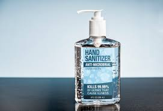

FACE MASKS
Face masks help slow the spread of the coronavirus (SARS-CoV-2) that causes COVID-19.Face masks combined with other preventive measures, such as frequent hand-washing and physical distancing, can help slow the spread of the virus.
Masks should be snug over the nose, mouth and chin, with no gaps. You should feel warm air coming through the front of the mask when you breathe out. You shouldn't feel air coming out under the edges of the mask.We have differnt types of masks which are based on the material with which they are made of - medical masks, N95 masks, cloth masks.

SANITIZERS
Hand sanitizers are the science based magic liquid that removes dirt and germs from your hands within seconds without water. They also work effectively against viruses, but you need to be sure of the component of the sanitizer - make sure you check it on the label. Hand sanitizers are topical these days because it keeps you safe from the coronavirus outbreak. It can be used when soap and water are not available.
Alcohol in-activates germs like viruses by attacking their cell structures. For example, alcohol damages the lipid layer that envelops the novel coronavirus. That makes the virus impossible to infect anyone.
SOCIAL DISTANCING
Social distancing, also called “physical distancing,” means keeping a safe space between yourself and other people who are not from your household.
To practice social or physical distancing, stay at least 6 feet (about 2 arm lengths) from other people who are not from your household in both indoor and outdoor spaces.
COVID-19 spreads mainly among people who are in close contact (within about 6 feet) for a prolonged period. Spread happens when an infected person coughs, sneezes, or talks, and droplets from their mouth or nose are launched into the air and land in the mouths or noses of people nearby. The droplets can also be inhaled into the lungs. Recent studies indicate that people who are infected but do not have symptoms likely also play a role in the spread of COVID-19. Since people can spread the virus before they know they are sick, it is important to stay at least 6 feet away from others when possible, even if you—or they—do not have any symptoms.